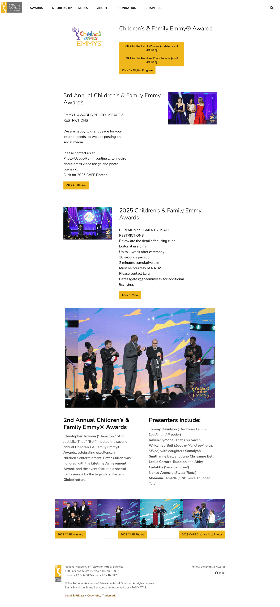

02 / CONTRACT · WEBSITE REDESIGN
The Emmys
One modular template for every award category page, so visitors can see what's happening now and find the latest videos fast.

01 / OVERVIEW
One modular template, from research to UI.
I redesigned the award category pages of the Emmys website around one modular template, within NATAS's design system. As the sole designer, I took the work from research to UI, handed it to developers, and kept refining pages after launch.
02 / PROBLEM
Visitors could not tell what mattered.
The old category pages read like a document: a lot of information, buttons placed loosely, and no alignment, typography or structure. Content audit and user feedback showed that visitors couldn't tell what mattered or where to find the latest ceremony videos.

03 / SOLUTION
One template, three main decisions.
I rebuilt each category page as one template with three main decisions:
Focus on the ceremony that matters now.
Each page centers on the upcoming or just-held ceremony instead of listing everything equally.
A recent videos module.
Visitors can scan clips and find the video they want quickly.
A visual identity per award.
A key image carries the award name and its color, and nominee photos replace the click-through documents that only listed names.
I worked with developers to build the template. I stayed on after launch to update information pages and refine secondary pages.
Award name and award color carried by the key image.
Scannable ceremony clips and video selection.
Nominee photos in place of click-through name documents.
04 / IMPACT
A shared template, faster page updates.
Deliverables
Modular category template, key image system, recent videos module, nominee layouts.
Outcome
The client responded positively. Editors went from about one hour or so to under 30 minutes per page update.
05 / OPPORTUNITIES
Support visitors and the editors behind the pages.
The template is for visitors looking for ceremony information and clips, and for the editors who maintain the pages. It can extend to new categories and future ceremonies without redesigning each page.
06 / REFLECTION
Structure helps people scan and find the next step.
Designing a template means designing for the editors as well as the visitors. The biggest gains came from structure, not decoration: putting the current ceremony first and giving content a repeatable layout made pages clearer to read and faster to maintain.
Showing information visually helps people understand it at a glance and find where to go next. A key image, a recent-videos module and nominee photos turned a wall of text into something visitors could scan. A shared template kept the layout the same across every category, so people who found what they wanted on one page could do it on the next.
Next time I'd measure it, for example the time to find the latest video and the time to update a page.